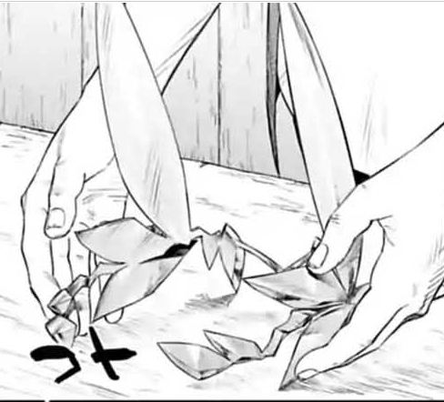

遮掩發飾 50 魔幻本質
這是一個掛在后腦的金色的發飾，外表像金屬制成，但質量較輕。發飾的裝飾就像一片片金色的葉片一般（詳見配圖）。
這個發飾上被附加了可以避開視線的附魔。
效果：
佩戴該發飾后，如果你的相貌值大于2，則在他人眼中你的相貌值只有2點。并且你所具有的態度提升的效果、在社交相關檢定的加成等類似效果不會生效。
但如果你進行一些引人注目的行動，發飾的效果將在本場景內不生效。例如：主動對他人進行魅惑、提醒他人注意自己的相貌、進行某些會吸引大眾的目光的行動。